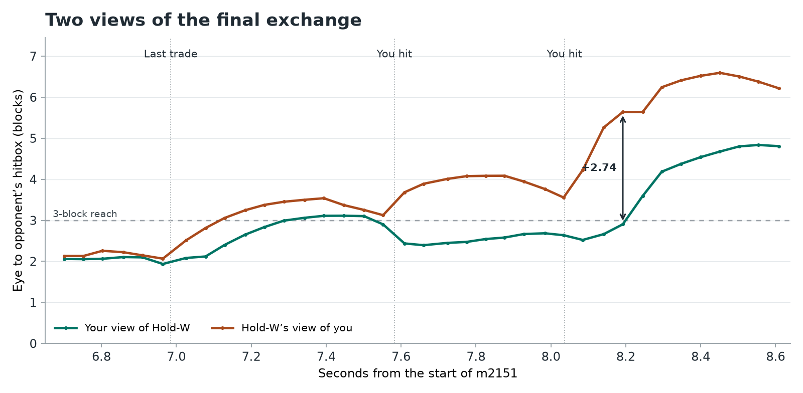
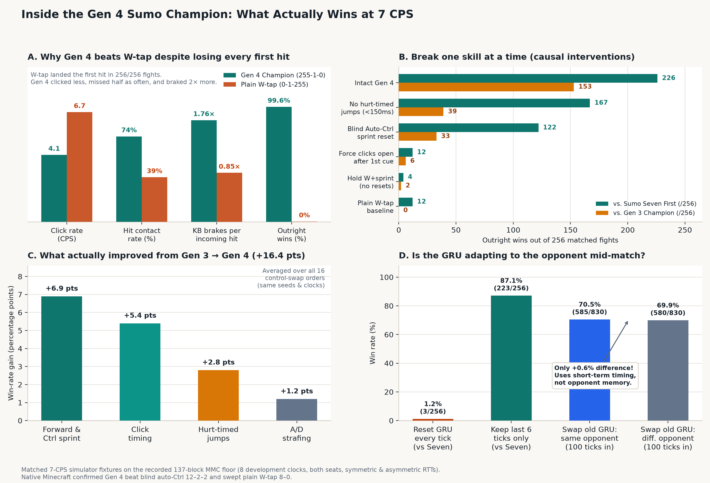
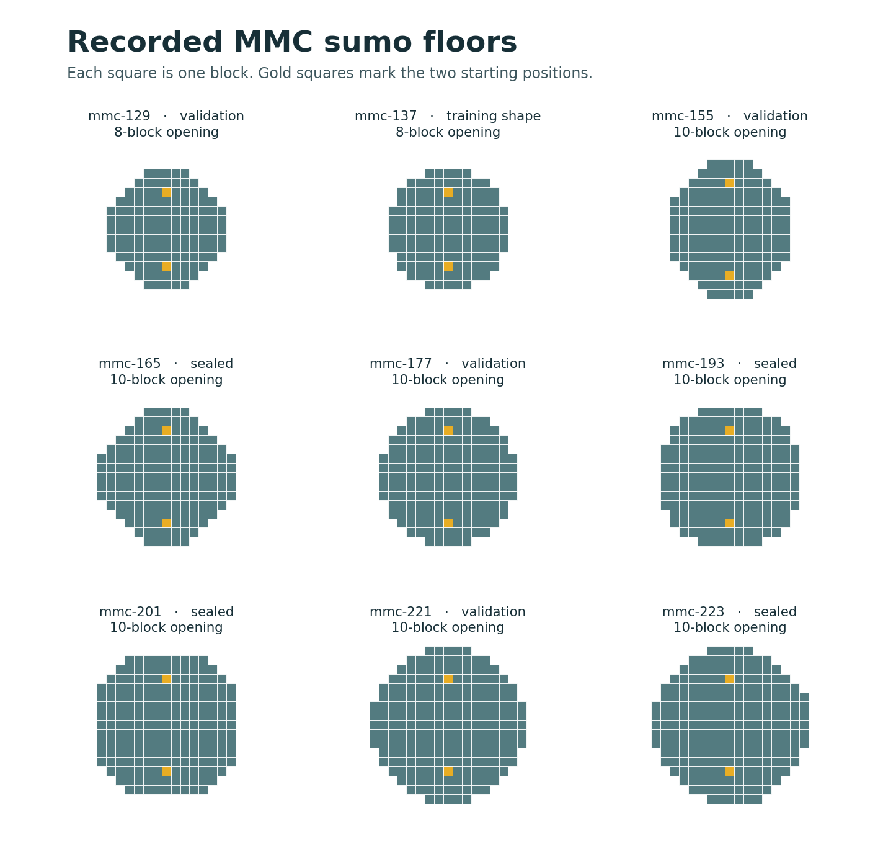
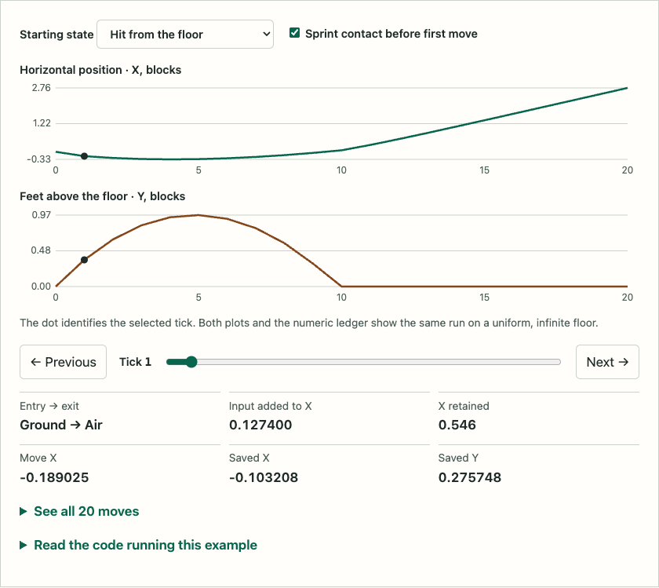

How far out does the skill ceiling for Minecraft Sumo actually go?
Sumo looks absurdly simple: two players, empty hands, a tiny 13×13 stone island, first one knocked off loses. Yet the best human players pull off things that look like wizardry. I built a local practice server, a Forge replay/coaching mod, slow-motion sumo, and an RL league to figure out what is actually happening tick by tick—and to get better myself.
What kicked all of this off
This whole rabbit hole started from watching the #1 Sumo player play and wondering how much real depth was hiding inside 1.8.9 melee physics. Watch these two videos—especially the second one at 0:58. Right before losing near the edge, he flicks his mouse to the right to deal sideways knockback, throws off his opponent's movement completely, and turns a lost position at the edge into a win:
New to Minecraft 1.8.9 PvP? 30-second primer (skip if you already play)
Reach & Lag: Every player has a 3.0-block attack reach measured from their own client's view of the opponent. Because network packets take time to arrive (and Minecraft smooths enemy movement over 3 ticks), two players running at each other can literally disagree on who is within 3 blocks.
Sprint-Resetting (W-tapping): Your first melee hit while sprinting deals massive extra knockback, which immediately consumes your server sprint state. To get heavy knockback again on the next hit, players briefly release and re-press W ("W-tapping") so the server sees sprint turn off and back on.
Knockback Braking (0.6× slowdown): Every time you land a melee hit while locally sprinting in 1.8.9, Minecraft multiplies your own horizontal speed by 0.6×—even if your opponent is currently invulnerable! Clicking on target right after getting knocked backward acts like an emergency brake.
Miss Cooldown: If you swing and miss air, 1.8.9 enforces a 10-tick cooldown before another click can register on an entity.
First: seeing the invisible (and getting better myself)
Before training a single AI, a big part of my motivation was simply wanting to see why I was winning or losing trades on Minemen Club (MMC) and train the right muscle memory. So I built a local 1.8.9 practice server and a custom Forge mod with three tools I actually use to practice:
- Slow-motion Sumo (
0.10×to1.00×speed): Scales physics ticks, bot CPS, and simulated network ping together so you can play a full duel at half or quarter speed and feel every timing window. - Two-POV overlays & multi-POV replays: Live reach spheres, a pink ghost showing where the opponent's delayed client currently sees you, a live Sumo Coach (flashing green when you land a verified 0.6× KB brake, plus Sprint-KB vs. Base-KB verdicts), and jump-reset / blockhit drills.
- Frame-by-frame trade breakdowns: Offline replays with recorded keystrokes, CPS, sprint packets, and counterfactual "how much less would you have slid if you hadn't dropped sprint here?" estimates.
Looking at my own replays exposed a brutal habit: if you release W immediately as you take knockback, you drop local sprint right when you're flying backward. That means your clicks during the slide stop triggering the 0.6× knockback brake—throwing away the single highest-value brakes in the entire exchange and launching you off the platform. Keep W + sprint held through the first incoming hit so your immediate clicks brake your recoil, then reset sprint cleanly before your next fresh hit.

m2151, the green curve (your client's view of the opponent) stays inside the 3.0-block reach line while the burnt-orange curve (their client's delayed view of you) drifts +2.74 blocks farther away.
Then: training RL bots—and figuring out why the best ones win
Once the simulator matched real 1.8.9 physics and all 28 real Minemen Club arena layouts, I started running an adversarial 7-CPS reinforcement learning league (a main GRU fighter + specialized counter-agents trained to beat each generation's champion).
In matched 7-CPS play, the Gen 4 champion (sumo-league-remote-004) went 255–0–1 against plain W-tap in simulation, 8–0 against plain W-tap in real Minecraft, and beat the earlier sumo-seven-first specialist 226–20–10 (the same specialist that had previously swept an earlier champion 32–0!). Against me personally in the first five post-fix normal-speed human duels (m800000050–054), Gen 4 went 5–0—even though I clicked 6.75 CPS to its 3.96 CPS.
Win rates are boring without knowing what the bot is actually doing. So we ran causal control interventions—breaking one skill at a time and swapping individual keys between Gen 3 and Gen 4 on identical seeds and clocks. Four real discoveries jumped out:

1. Click discipline destroys spam clicking at 7 CPS
Against plain W-tap, W-tap landed the very first hit in all 256/256 games—and still lost 255 of them. W-tap clicked 6.65 CPS and only connected on 38.7% of clicks, constantly wasting its 7-CPS budget on air swings and eating miss cooldowns. Gen 4 clicked just 4.06 CPS, connected on 74.0% of presses (82.3% against Seven!), and delivered 1.76 outward sprint-contact brakes per incoming hit vs. W-tap's 0.85.
When we intervened and forced Gen 4 to click freely after the first hurt cue, its wins against Seven plummeted from 226 → 12 (and against Gen 3 from 153 → 6). Spending even a single click on air delays your 0.6× brake right when knockback arrives.
2. A possibly new 1.8.9 technique: tapping the Sprint key instead of W-tapping
This was one of the coolest surprises in the entire project. Instead of releasing W to reset sprint like every human 1.8.9 PvPer does, the learned Sumo policy resets server sprint by tapping the Sprint key (Ctrl) while keeping W held—letting Minecraft send a sprint STOP packet on contact and re-arm sprint on the next tick without sacrificing forward input!
Naturally, I wondered: if sprint-key tapping is that good, what happens if we hard-code it to auto-reset Ctrl after every sprinting contact? We tested that exact variant (gen4-auto-sprint) using the same frozen Gen 4 weights:
- Auto-Ctrl actually raised sprint-powered fresh hits from 94.8% → 98.1%—and still lost 2–12 (2 draws) in real Minecraft and 31–214 in simulation against intact Gen 4!
- Why? At 80 ms ping, blindly resetting Ctrl after every contact dropped its contact rate (
76.3% → 67.8%) and cut outward KB brakes per incoming hit (1.79 → 1.50). Gen 4 isn't blindly tapping Ctrl on every hit—it's choosing when to reset sprint vs. when to keep sprint latched for consecutive brakes.
3. Hurt-timed jumps help—while strafing is still unsolved
Removing Gen 4's jumps within 150 ms of getting hit drops its wins against Gen 3 from 153 → 39 (and against its own counter from 124 → 37), while removing jumps outside that hurt window changes nothing (226/226 wins vs. Seven preserved). On the flip side, A/D strafing is actually still a weak spot: disabling Gen 4's strafe keys on fresh seeds increased its wins against Gen 3 (67 → 85) and its own counter (67 → 93). Our bots are still nowhere near that #1 human player's sideways-KB mouse flick at the edge!
4. Honest open question: are the bots adapting to opponents mid-match?
One of my original hypotheses was that a recurrent policy would read an opponent's pattern (hit-selecting, jump-reset timing, strafing habits) mid-duel and "break their pattern." We tested that directly on Gen 4:
- Resetting the GRU hidden state every tick destroys the bot (
226 → 3wins vs. Seven), and keeping just the last 6 ticks recovers223/226wins—so recurrence is essential for short-term timing. - The swap test: After 100 or 240 decisions, we swapped in an older GRU state from a different match against the same opponent vs. a different opponent (replaying only the last 6 real ticks). Win rates were virtually identical: 585/830 vs. 580/830 at 100 ticks, and 231/377 vs. 231/377 at 240 ticks.
So far, we haven't seen convincing mid-match opponent adaptation in RL Sumo bots. One guess is that bots lack human reaction-time bottlenecks and play closer to a memoryless equilibrium—still an open question!
In parallel, I ran a deep series of studies on 1.8.9 Boxing (first to 100 hits + established-combo maintenance). The honest headline: plain W-tap is brutally strong in regulation boxing. Many clever tricks—blind jump escapes, fixed first-hit delays, late backsteps—looked great on individual clips or single timing phases, then tied or lost to W-tap across fresh clocks. Sub-millisecond packet-drain boundaries (literally a 0.15 ms tracker shift) and whether the defender lands one early 0.6× recoil brake routinely flip an entire combo. Full evidence lives in the boxing research log.
How the 1.8.9 lab & simulator stay honest
Early on, simplified toy simulators lied constantly—a missing fall-damage velocity packet or a 1-tick sprint-acceleration bug would make a bot look unbeatable in sim and collapse in real Minecraft. Everything here follows strict ground-truth rules:
- Reconstructed real MMC arenas: Decoded 430 recorded Minemen Club sumo matches from raw Protocol 47 chunk/block packets to recover all 9 floor outlines and 28 block-exact variants (verified block-for-block against stock 1.8.9
Entity.moveEntitycollision boxes). - Exact physics + recorded timing calendars: The fast Java simulator tracks both clients' independent render interpolation, packet queues, server drains, hurt immunity, and 0.6× contact slowdowns using real recorded host timing calendars, with a frozen split between training, development, and sealed validation maps/clocks.
- Legal own-client observations only: Every playing policy sees only its own client's state (22-dim input into an 8- or 32-unit GRU/MLP) and outputs ordinary physical keys + click gate under an enforced 7-CPS (142.857 ms) ceiling.
- Mandatory W-tap comparison gate: Every controller is evaluated against plain W-tap under identical reach, RTT, CPS ceiling, aim settings, and native Minecraft repeats.

Interactive explorers & deeper docs

Why You Flew Back
Step frame-by-frame through five real MMC trades: early jumps, W-release timing, miss cooldowns, and heavy hits.
Open guide →
Movement & Knockback, One Tick at a Time
Scrub through exact 1.8.9 ground/air friction and toggle sprint-contact braking on or off to see every floating-point tick.
Launch tick explorer →